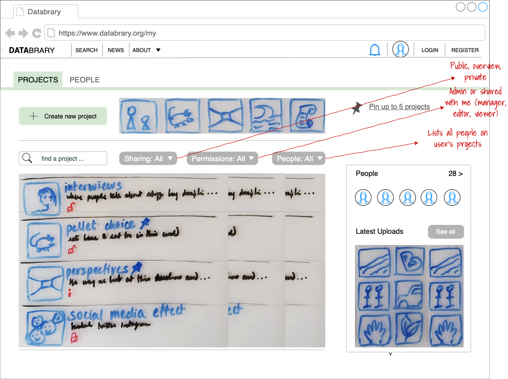

Dashboard overview 
–>
This is a user’s dashboard or primary landing page. It is where users land after they log-in from the Databrary home page.
Header links:
Direct links:
<q-layout view="lHh Lpr lff" container style="height: 600px" class="shadow-2 rounded-borders">
<q-header elevated class="bg-cyan-8">
<q-toolbar>
<q-toolbar-title>Projects</q-toolbar-title>
<q-btn flat @click="drawer = !drawer" round dense icon="menu"></q-btn>
</q-toolbar>
</q-header>
<q-drawer
v-model="drawer"
show-if-above
:width="200"
:breakpoint="400"
>
<q-scroll-area style="height: calc(100% - 150px); margin-top: 150px; border-right: 1px solid #ddd">
<q-list padding>
<q-item clickable v-ripple>
<q-item-section avatar>
<q-icon name="add"></q-icon>
</q-item-section>
<q-item-section>
CREATE NEW
</q-item-section>
</q-item>
<q-item active clickable v-ripple>
<q-item-section avatar>
<q-icon name="history"></q-icon>
</q-item-section>
<q-item-section>
Recently updated
</q-item-section>
</q-item>
<q-item clickable v-ripple>
<q-item-section avatar>
<q-icon name="work"></q-icon>
</q-item-section>
<q-item-section>
Projects I own
</q-item-section>
</q-item>
<q-item clickable v-ripple>
<q-item-section avatar>
<q-icon name="supervisor_account"></q-icon>
</q-item-section>
<q-item-section>
Shared with me
</q-item-section>
</q-item>
<q-item clickable v-ripple>
<q-item-section avatar>
<q-icon name="supervised_user_circle"></q-icon>
</q-item-section>
<q-item-section>
User groups
</q-item-section>
</q-item>
<q-item clickable v-ripple>
<q-item-section avatar>
<q-icon name="bookmarks"></q-icon>
</q-item-section>
<q-item-section>
Project groups
</q-item-section>
</q-item>
</q-list>
</q-scroll-area>
<q-img class="absolute-top" src="https://cdn.quasar.dev/img/material.png" style="height: 150px">
<div class="absolute-bottom bg-transparent">
<q-avatar size="56px" class="q-mb-sm">
<img src="https://cdn.quasar.dev/img/boy-avatar.png">
</q-avatar>
<div class="text-weight-bold">Ruth Ginsburg</div>
<div>University of Michigan</div>
</div>
</q-img>
</q-drawer>
<q-page-container>
<q-page padding>
<p v-for="n in 4" :key="n">
<q-avatar rounded size="100px" font-size="82px" color="teal" text-color="white" icon="directions"></q-avatar>
<q-avatar rounded size="24px" color="orange">E</q-avatar>
<q-avatar rounded size="24px" color="orange">V</q-avatar>
Project name & description
<q-avatar rounded size="100px" font-size="82px" color="teal" text-color="white" icon="directions"></q-avatar>
<q-avatar rounded size="24px" color="orange">E</q-avatar>
<q-avatar rounded size="24px" color="orange">V</q-avatar>
Project name & description </p>
</q-page>
</q-page-container>
</q-layout>CC0 1.0 Universal License
Comments